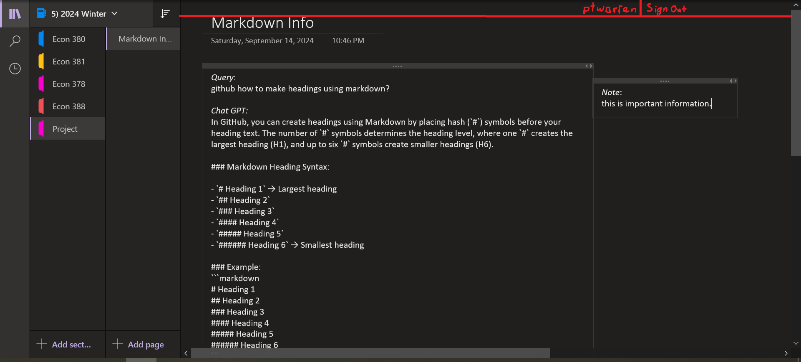

Notebooks
- Notebook 1 (from database)
- Notebook 2 (from database)
- Shared Notebook
Folders
- Notebook 1 Folder 1 (from database)
- Notebook 1 Folder 2 (from database)
- Shared Notebook Folder 3
Pages
- Notebook 1 Folder 1 Page 1 (from database)
- Notebook 1 Folder 2 Page 2 (from database)
- Shared Notebook Folder 3 Page 1
Current Page
Database data -- notes created by user
Websocket data -- notes created by user and/or other user that updates live as either user edits
